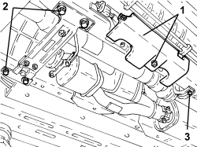
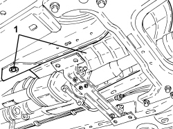
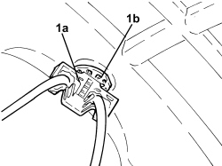
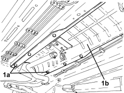

1076A48 CATALYTIC CONVERTER HEAT SHIELD - R.R
- Path
- Procedures > 10 ENGINE > 1076 EXHAUST PIPES AND SILENCERS > 1076A EXHAUST PIPE FASTENINGS AND PROTECTIONS > 1076A48 CATALYTIC CONVERTER HEAT SHIELD - R.R
- Kind
- repair procedure (removal / refitting; the operation number is the code)
- Applies to
- engines: 2.4 JTD 20v, 3.2 JTS; all production periods
- Interactive page
- https://sloeber94.github.io/elrnDB-aBrrSpdr/en/#/946001953
Applies to: engines: 3.2 JTS; all production periods
 Removing
Removing
 Refitting
RefittingOp. 1076B82 LEFT EXHAUST PIPE BETWEEN CATALYTIC PRECONVERTER AND CONVERTER - R.R.
Op. 1076B84 RIGHT EXHAUST PIPE BETWEEN CATALYTIC PRECONVERTER AND CONVERTER - R.R.
1. Undo the fastenings and remove the Lambda sensor electrical connections guard.
2. Undo the bolts securing the catalytic converter assembly mounting bracket to the bodyshell.
3. Undo the bolt securing the propeller shaft front mounting to the bodyshell.

Applies to: engines: 3.2 JTS; all production periods
- Position a hydraulic lift under the front silencer and disconnect the flexible support mounting.
1. Slowly lower the catalytic converter assembly, undo the fastenings securing the heat shield to the bodyshell and then remove it.

Applies to: engines: 3.2 JTS; all production periods
Refitting
Removing- Place the heat shield back in its housing and secure it using the bolts.
- Raise the catalytic converter assembly and fasten the mounting bracket to the bodyshell.
- Place the propeller shaft front mounting in position and fasten it to the bodyshell tightening the bolt to the recommended torque.
Component | Fastening | dia | Value (daNm) | Validity |
|---|---|---|---|---|
Body side propeller shaft front support | Bolt | M8 | 2.2 ÷ 2.7 | 3.2 JTS |
- Place the Lambda sensor electrical connections guard in position and tighten the fastenings securing it to the bodyshell.
Op. 1076B84 RIGHT EXHAUST PIPE BETWEEN CATALYTIC PRECONVERTER AND CONVERTER - R.R.
Op. 1076B82 LEFT EXHAUST PIPE BETWEEN CATALYTIC PRECONVERTER AND CONVERTER - R.R.
Applies to: engines: 2.4 JTD 20v; all production periods
Removing
RefittingOp. 1080B81 PARTICULATE FILTER (D.P.F.) - R.R.
1. Disconnect the pressure pipes inside the DPF, remove clip (1a) and unscrew the toothed washer (1b).

Applies to: engines: 2.4 JTD 20v; all production periods
- Disconnect the central exhaust pipe from the front flexible block.
1. Undo the bolts (1a) and remove the catalytic converter heat shield (1b).

Applies to: engines: 2.4 JTD 20v; all production periods
Refitting
Removing- Place the heat shield for the catalytic converter back in its housing and secure it using the bolts.
- Connect the central exhaust pipe to the front flexible block.
- Tighten the toothed washer and clip and connect the pressure pipes inside the DPF.